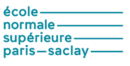

|
2025 - now Chief Models Officer San Francisco, California, US & Paris, France |
| 2024 Principal Llama Engineer Meta GenAI Paris, France |
|
| 2021 - 2023 Senior Staff Research Scientist Google DeepMind Paris, France |
|
| 2019 - 2021 Staff Research Scientist Google DeepMind Paris, France |
|
|  | 2015 - 2016 Habilitation à Diriger des Recherches (HdR) Département des études doctorales École normale supérieure Paris-Saclay Paris-Saclay, France |
| 2013 - now Experienced Junior Scientist (CR1) SequeL Inria Lille - Nord Europe Lille, France |
|
 |
2014 - now External Lecturer (CEV) M2 MVA Mathématiques / Vision / Apprentissage École normale supérieure, Paris-Saclay Paris-Saclay, France |
| 2012 - 2013 Junior Scientist (CR2) SequeL Inria Lille - Nord Europe Lille, France |
|
| 2011 - 2012 Postdoctoral Researcher SequeL Inria Lille - Nord Europe Lille, France |
|
| 2005 - 2011 PhD. in Machine Learning Computer Science Art & Sciences University of Pittsburgh, Pittsburgh, PA, USA Andrew Mellon Predoctoral Fellowship 2008/2009 Academic Entrepreneurship Certificate taken courses |
|
| summer 2010 Intel Labs Intel Santa Clara, CA, USA |
|
| spring 2009 Intel Research Intel Santa Clara, CA, USA |
|
| spring 2005 Centro de Inteligência Artificial Departamento de Informática Faculdade de Ciências e Tecnologia Universidade Nova de Lisboa, Lisboa, Portugal |
|
| 2003 - 2006 research assistant Department of Neurophysiology Institute of Normal and Pathological Physiology Slovak Academy of Sciences, Bratislava, Slovakia |
|
| 2000 - 2005 (1i6 2i5 3itm 4itm 5itm) MSc. major: computer science specialization: artificial intelligence theoretical specialization: mathematical methods in cs Faculty of Mathematics, Physics and Computer Science Comenius Univerzity in Bratislava, Slovakia taken courses |
{kind=link}
{kind=link}
mv